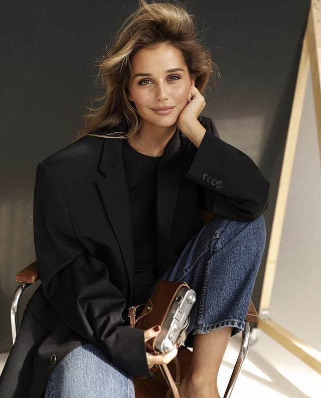
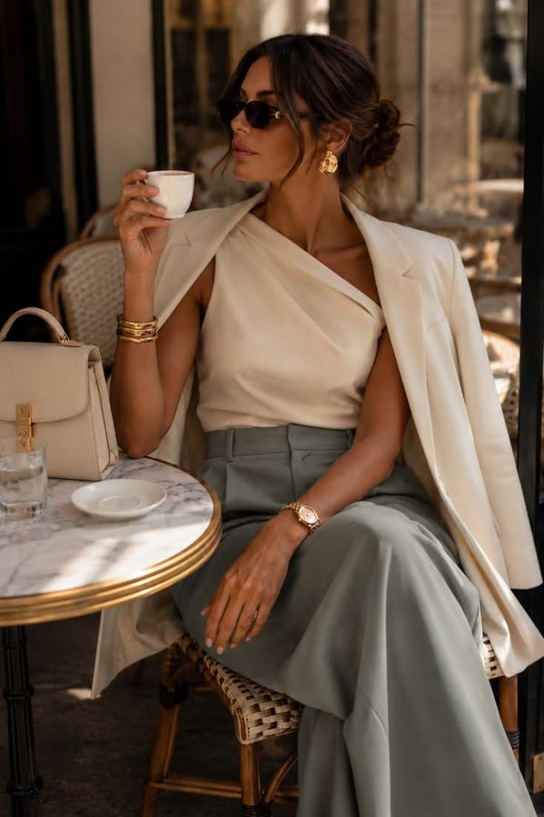
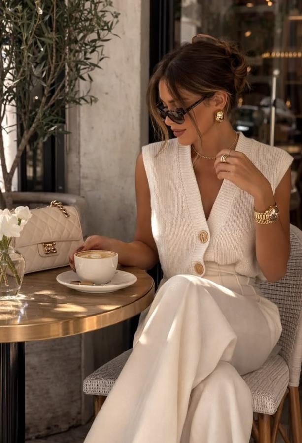
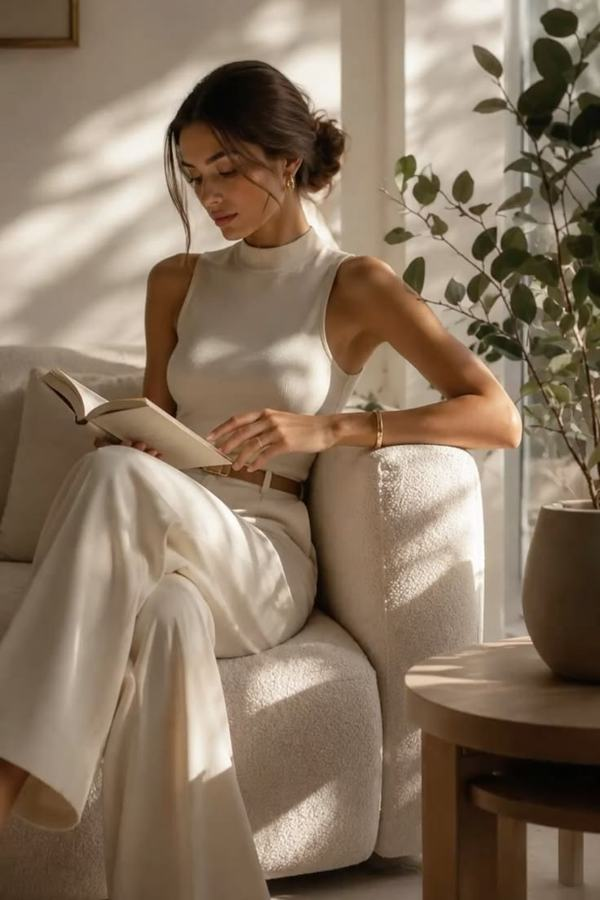
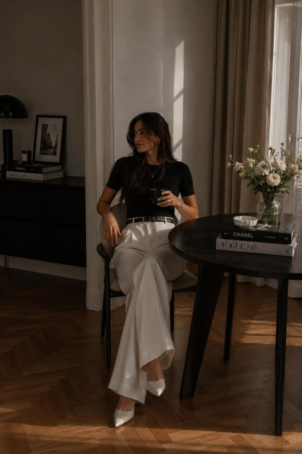
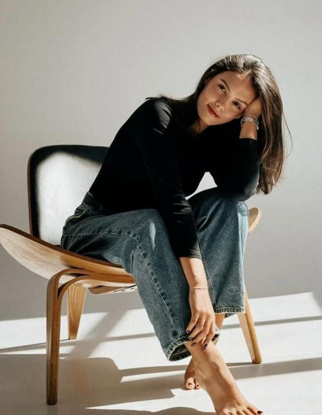
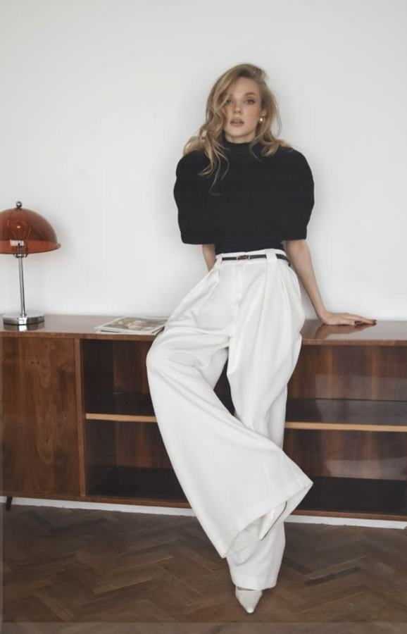

Теперь делаем
Практика
В первой части вы соберёте примеры желаемых кадров и свои фотографии, вместе с нейросетью превратите вдохновение в сценарий съёмки, попробуете создать серию по числу референсов (обычно 4–7 кадров) и научитесь исправлять типичные ошибки. Для первого раза достаточно 1 удачного кадра, полная серия – следующий шаг. Во второй части оживите своё настоящее фото записью своего голоса. Генерация занимает время: пока ждёте, ставьте видео на паузу.
Часть 1 · шаги 1–8
Серия фотографий по референсам
Идём по такому маршруту: цель → референсы → разбор и сценарий → свои фото → генерация → точечные правки → проверка.
С чем возникают сложности
Нейрофотосессия может выглядеть убедительно, но не всегда сохраняет вашу внешность. Бывает и наоборот: человек похож на себя, а сама фотография кажется искусственной. Поэтому оцениваем 2 отдельных результата: узнаваемость и фотографическую естественность. Вот 7 возможных проблем и то, как их заметить.
Важное уточнение. Эти признаки помогают проверять качество своей генерации, но сами по себе не доказывают, что чужая фотография создана нейросетью. Ошибки с пальцами встречаются не во всех ИИ-снимках, а гладкая кожа бывает следствием обычной ретуши.
4 правила хорошего результата
- Загружайте понятные фото внешности. Нужны анфас, ракурс в 3/4, реальные улыбки и выражения лица.
- Не меняйте всё сразу. Сначала добейтесь сходства, затем пробуйте новые волосы, одежду, свет и обстановку.
- Проверяйте серию по оригиналам. Сравнивайте каждый новый кадр с настоящими фотографиями, а не только с предыдущей генерацией.
- Проверяйте детали перед использованием. Лицо, руки, волосы, украшения, текст, тени, фон и предметы.
Решите, для чего нужны фотографии
Начните с вопроса, где будут жить новые фотографии. От ответа зависит, какие кадры собирать в серию.
- Для сайта, резюме, страницы специалиста: портреты в камеру, полуростовые кадры, более спокойные эмоции.
- Для блога и социальных сетей: рабочие ситуации, разные планы и места под будущие надписи.
- Для выступлений и анонсов: чистые фоны, узнаваемое лицо, уверенное выражение, удобное кадрирование.
- Для себя: любимая эстетика, более личные и эмоциональные кадры.
Запишите задачу 1 фразой: «Фотографии для [где они будут]». К ней вы вернётесь в шаге 8, когда будете выбирать кадры.
Найдите и сохраните 4–7 референсов
Ищите примеры на Pinterest, в портфолио фотографов, в редакционных съёмках, среди понравившихся кадров других людей и в собственных старых фотосессиях. Можно взять старую съёмку, которую вы любите за свет, одежду и атмосферу, и попробовать пересоздать её с вашей нынешней внешностью.
Что вводить в поиск Pinterest
Откройте Pinterest, нажмите на строку поиска и вставьте запрос. Чтобы скопировать запрос, нажмите на него.
Сохраните 4–7 разных референсов, лучше с разнообразными планами, позами и локациями. Брать все кадры из 1 фотосессии не обязательно: главное, чтобы вам нравился общий визуальный язык.
Не сохраняйте кадры с «пластиковыми» лицами, которые сами выглядят созданными нейросетью, – берите реалистичные снимки, в которых вам самим хотелось бы оказаться.
Сколько референсов сохраните – столько кадров и получится. Лишние уберите до разбора: 4 удачных фотографии лучше 7 случайных.
Пример: 7 референсов из моей подборки
Это референсы-вдохновение из Pinterest: с них берём постановку кадра – позу, одежду, свет и место. Лицо и фигуру берём только с ваших фото.







Нажмите на картинку, чтобы рассмотреть её крупно. Какой сценарий получился по этой подборке, смотрите в шаге 3.
Сделайте разбор референсов – это обязательный шаг
До генерации покажите подборку нейросети: пусть опишет каждый референс и составит сценарий съёмки. На этот разбор опирается главный промпт в шаге 5, поэтому пропускать его нельзя. Изображения на этом шаге создавать не нужно.
В уроке я показываю на ChatGPT – из России он работает только через VPN. Без VPN попробуйте ГигаЧат или Алису: они тоже умеют работать с вашим фото, но сходство лица не гарантируют, поэтому проверка в шаге 8 особенно важна.
Сравнение инструментов и подробности – в бонусе «Что дальше: инструменты, обучение внешности, апскейл».
Как я делаю в видео
Я работаю в приложении ChatGPT на компьютере: создаю проект «Нейрофотосессии» и добавляю в него папку, где лежат 2 подпапки – мои фото и референсы. Тогда не нужно прикреплять картинки по одной, а готовые кадры нейросеть складывает в ту же папку. Если у вас другая нейросеть или телефон – прикрепляйте картинки в чат, как описано ниже.
Откройте новый чат и прикрепите к сообщению сохранённые референсы – так же, как любой файл. Порядок загрузки станет нумерацией: первый референс – Б1, второй – Б2 и так далее. Свои фотографии пока не добавляйте. Вставьте промпт и отправьте.
Обязательный промпт · разбор референсов
Я прикладываю референсы-вдохновения для будущей нейрофотосессии. Пока НЕ создавай изображения. Пронумеруй референсы по порядку загрузки: Б1, Б2, Б3 и так далее. Напиши, сколько их всего. Разбери каждый референс отдельно: 1) поза и положение рук; 2) крупность и ракурс; 3) одежда, аксессуары и причёска; 4) интерьер и предметы, важные для композиции; 5) направление света, тени и цветовая палитра; 6) эмоциональное впечатление. Затем составь сценарий съёмки: 1 кадр на каждый референс – столько кадров, сколько референсов. Для каждого кадра укажи номер референса, что надо сохранить максимально близко и что можно адаптировать. Не смешивай локации и одежду разных референсов без моего разрешения. Лица и фигуры моделей на референсах не описывай как желаемую внешность. В конце спроси, что я хочу поправить в сценарии, и дождись моего ответа.
Что должно быть в разборе – сверьте
По каждому референсу в ответе должны быть 6 вещей. Примеры в памятке – из моей подборки.
Прочитайте разбор и поправьте сценарий
Прочитайте разбор и сценарий. Поправьте словами то, что нейросеть увидела не так, уберите лишние кадры. Число кадров = число референсов.
В конце ответа нейросеть спросит, что поправить. Ответьте в том же чате обычными словами, например: «В кадре 2 брюки серо-оливковые, а не бежевые». Если всё верно, напишите: «Сценарий подходит».
Не пишите только «хочу так же красиво». Назовите, какие именно особенности референса нельзя потерять.
Пример: так выглядел сценарий по моей подборке
Вам это писать не нужно – сценарий составит нейросеть в разборе. Пример показывает, насколько подробным он бывает.
Подготовьте 5–6 своих настоящих фотографий
Покажите нейросети, как вы действительно выглядите, а не «идеальное селфи». По этим фотографиям она понимает вашу внешность, поэтому каждому снимку в комплекте достаётся своя задача.
Идеальный стартовый комплект
- Фото 1 – главное фото лица. Чёткое, без фильтра, анфас или почти анфас; глаза, нос, губы и овал лица хорошо различимы. Лучше равномерный свет и спокойный фон.
- Фото 2 – ракурс в 3/4. Показывает форму лица при небольшом повороте головы.
- Фото 3 – естественная улыбка. Чтобы на итоговых снимках улыбка оставалась вашей.
- Фото 4 – другая мимика. Например, спокойное серьёзное выражение или смех.
- Фото 5 – другой реальный вариант причёски. Распущенные волосы, низкий хвост или пучок, если вы так действительно носите волосы.
- Фото 6 – по пояс или в полный рост. Помогает показать телосложение, пропорции и ещё 1 реальный образ одежды.
Несколько снимков можно сделать специально для генерации: встаньте напротив светлого однотонного фона, повернитесь к окну, снимите лицо прямо и под небольшим углом, улыбнитесь. Профессиональная камера не обязательна: важно, чтобы лицо было видно и не было сильного размытия.
Насколько свежими должны быть фото
Желательно брать актуальные, например за последние 2–3 года. Если вы заметно изменили причёску, вес или другие особенности внешности, выбирайте более свежие снимки. Старые любимые фотосессии при этом пригодятся как референсы стиля, а не как единственный источник сегодняшней внешности.
Телефон и фотосессия вместе
Снимки с телефона и с фотосессии можно смешивать. Одинаковое качество всех кадров не требуется, но основное фото лица обязательно должно быть достаточно чётким. Избегайте сильных фильтров, густой ретуши, очков, скрывающих глаза, и множества почти одинаковых селфи.
Роли фотографий А1–А6
Роли – ключ к предсказуемому результату. Сложите снимки в 1 папку и дайте им обозначения А1–А6, например переименуйте файлы:
- А1 – главный ориентир внешности;
- А2–А4 – дополнительные ракурсы и мимика;
- А5 – вариант причёски;
- А6 – фигура и/или одежда.
Главное фото можно переименовать прямо в названии файла – например, «А1 главный ориентир внешности»: так нейросеть не перепутает.
Если главное фото – в чёрном платье и с собранными волосами, это не означает, что во всех новых кадрах должны быть чёрное платье и хвост. С этого фото берём прежде всего лицо, возраст и пропорции. Причёски и одежду распределяем отдельно.
В том же чате прикрепите свои фото и отправьте главный промпт
Вернитесь в чат, где нейросеть разобрала референсы и где вы поправили сценарий. Новый чат не открывайте: главный промпт опирается на разбор, который остался выше в переписке.
В работе участвуют 2 группы изображений:
- Группа А – «Это я»: ваши 5–6 настоящих фотографий. Их вы прикрепляете сейчас.
- Группа Б – «Такую съёмку хочу»: референсы, которые уже лежат в чате с шага 3. Загружать их заново не нужно.
Прикрепите свои фото к новому сообщению по порядку, начиная с А1: первое фото нейросеть возьмёт как главный ориентир лица. Затем скопируйте промпт, вставьте его в то же сообщение и отправьте. Подставлять в текст ничего не нужно.
Главный промпт · фотосессия на основании разбора
Теперь создай реалистичную фотосессию с моей собственной внешностью – по сценарию, который ты составил(а) выше в разборе референсов, с учётом моих правок. Я прикрепляю мои настоящие фотографии – это ГРУППА А. Используй их как ЕДИНСТВЕННЫЙ ориентир личности: - А1 (первое фото) – главный источник черт лица, возраста и пропорций; - остальные фото – проверка лица с разных ракурсов, естественной мимики, реальной причёски и фигуры. Сохрани мой узнаваемый овал лица, форму глаз, носа и губ, возраст, телосложение и характерные индивидуальные особенности. Не делай меня моложе, стройнее или похожей на другого человека. ГРУППА Б – референсы, которые я загрузила раньше и которые ты уже разобрал(а). Используй их как источник ПОСТАНОВКИ КАДРА, а НЕ внешности: позы, жеста, ракурса, одежды, причёски, света, расположения мебели и предметов, палитры и атмосферы. Не переноси лица, выраженные черты внешности или телосложение моделей с этих изображений на меня. ЗАДАЧА: Посчитай референсы группы Б и создай ровно столько же ОТДЕЛЬНЫХ вертикальных фотореалистичных кадров 4:5: 1 кадр = 1 референс, по сценарию из разбора. Перед генерацией напиши 1 строкой, сколько кадров будет. Не собирай коллаж. Не смешивай сцены между собой. Каждый кадр должен выглядеть как качественная редакционная фотография реального человека, без чрезмерной бьюти-ретуши. ПРИОРИТЕТЫ, если требования конфликтуют: 1. Моё узнаваемое лицо, возраст и реальные пропорции – из группы А. 2. Поза, обстановка, ракурс, одежда, освещение – из конкретного референса Б для этого кадра. 3. Общий стиль серии – спокойный editorial/lifestyle: естественный свет, натуральная фактура кожи, волос и ткани, правдоподобные тени. 4. Импровизация допустима только там, где нужная деталь не видна. ПРИЧЁСКИ: Разрешено менять укладку МЕЖДУ кадрами, если такая длина и текстура волос совместимы с моими фото. В каждом кадре ориентируйся на укладку его референса Б, сохраняя мой настоящий цвет, линию роста и тип волос. Не повторяй 1 причёску во всех кадрах автоматически. ОДЕЖДА: Здесь допускается одежда по референсам Б – это сознательная смена образов. Сохраняй её крой, силуэт и сочетание цветов. Не заменяй один предмет одежды другим без причины. Не добавляй принтов и логотипов. Вещи должны сидеть естественно на МОЕЙ фигуре. ОБЯЗАТЕЛЬНАЯ ПРОВЕРКА: - на всех кадрах один и тот же узнаваемый человек из группы А; - причёски и комплекты одежды – согласно соответствующим референсам Б; - каждый интерьер, поза и композиция близки именно к своему референсу Б; - руки, пальцы, очки, украшения и предметы реалистичны; - естественная кожа, без пластикового сглаживания; - никаких случайных надписей, новых аксессуаров и логотипов. Если сервис создаёт несколько отдельных изображений за 1 запрос, сгенерируй все кадры. Если нет – начни с кадра 1, а остальные создавай поочерёдно, каждый раз возвращаясь к моим фото группы А.
В промпте стоит «загрузила» и «похожей» – если вы мужчина, поправьте окончания.
Генерация идёт долго, особенно если кадров много. Можно попросить нейросеть делать несколько кадров параллельно.
Почему так
Разбор отвечает за то, что снимаем: кадры по вашим референсам. Главный промпт отвечает за правила, которые не меняются: откуда брать лицо, что важнее при конфликте требований, как обращаться с причёсками и одеждой, как проверить результат. Поэтому главный промпт один и тот же для любой подборки.
Каждому референсу достаётся свой кадр: Б1 – первый, Б2 – второй и так далее. Так меньше риск, что генератор смешает кафе, студию и рабочий кабинет в случайную локацию. Это повышает управляемость, но не гарантирует точного копирования.
Если сервис не позволяет надёжно различать столько изображений, сократите набор: 2–3 наиболее ясных фото вашей внешности и 1 стиль-референс на каждый отдельный кадр.
Если все кадры сразу не получаются, делайте по 1 кадру
Некоторые генераторы делают 1 кадр, другие – набор изображений или общую сетку. Поэтому вся серия за 1 запрос – пожелание, а не универсальная функция.
В таком случае после главного промпта отправьте в тот же чат промпт ниже. Вместо [номер] поставьте номер кадра и его референса, например 2 и Б2, а скобки уберите.
Промпт · 1 кадр за раз
Сейчас создай ТОЛЬКО кадр [номер] по референсу Б[номер] – по сценарию из разбора. Для лица и пропорций снова используй мои оригинальные фото группы А. Предыдущие сгенерированные кадры используй только как ориентир общего качества и визуальной согласованности, а не как новый источник лица. Максимально сохрани позу, костюм, интерьер, свет и композицию этого референса. Результат – 1 отдельный кадр 4:5, не коллаж.
Для следующих кадров меняйте номер. Если сходство ухудшается, возвращайтесь к настоящим исходным фото, а не обучайте генератор на цепочке собственных неточных изображений.
Докрутите результат короткими промптами
Правки можно писать и своими словами: «в кадре 1 поверни взгляд в камеру, всё остальное сохрани». Готовые формулировки ниже помогают, когда нужно точнее.
Правило: 1 правка – 1 задача. После каждой правки снова проверьте сходство с оригиналом. Слова «сохрани всё остальное» помогают задать намерение, но сервис всё равно может пересоздать часть изображения.
Найдите свою ситуацию, скопируйте промпт и отправьте его в тот же чат. Текст в квадратных скобках замените на свой: номер референса, 1 из перечисленных вариантов или своё описание. Скобки уберите.
1 · Красиво, но совсем не похоже
Сравни получившееся лицо с моими настоящими фото А1–А4. Назови до 3 самых заметных различий в чертах лица. Затем создай новую версию этого же кадра, исправив сходство. Не ориентируйся на лицо человека с референса Б. Сохрани позу, одежду, свет и интерьер выбранного Б.
2 · Опять одна и та же причёска
Для этого кадра используй причёску с референса Б[номер]: [распущенные волосы / низкий пучок / низкий хвост]. Сохрани мой настоящий цвет, длину, густоту и текстуру волос по реальным фото А. Не меняй лицо, одежду и композицию. Не добавляй серьги или новые украшения автоматически.
3 · Одежда не соответствует референсу
Исправь только комплект одежды по референсу Б[номер]: [точное описание верха, низа, цвета и силуэта]. Сохрани посадку вещей на моей реальной фигуре. Не меняй лицо, причёску, позу, свет и интерьер.
4 · Интерьер «убежал» от примера
Сверь фон получившегося кадра с Б[номер]. Воссоздай ближе к референсу: [стол / кресло / окно / консоль], их положение относительно меня, масштаб и направление освещения. Не заменяй локацию другой. Сохрани моё лицо, одежду и позу.
5 · Слишком искусственная кожа или выражение лица
Сделай фотографическую фактуру естественнее: сохрани поры, мягкие мимические линии, небольшую асимметрию лица, естественные пряди волос и правдоподобные тени. Убери ощущение бьюти-фильтра и натянутой улыбки. Не добавляй морщины и не меняй мой возраст или черты лица.
6 · Нужен ещё 1 кадр той же серии
Продолжи эту фотосессию новым кадром по Б[номер]. Внешность возьми из настоящих фото А, а из предыдущих генераций – только общую палитру и качество света. Повтори позу, одежду и обстановку Б[номер]; не копируй предыдущую позу и не меняй меня на другое лицо. Создай 1 отдельный вертикальный кадр 4:5.
7 · Нужно адаптировать удачный кадр под другую задачу
Адаптируй этот удачный портрет для [аватарки / обложки анонса / сайта / поста]. Сохрани мои черты лица, возраст, причёску, одежду и характер света. Измени только кадрирование: [крупный квадратный портрет / вертикальный 4:5 / горизонтальный кадр с пустым пространством под заголовок]. Не добавляй текст непосредственно в фотографию.
Когда лучше начать заново. Если после 2–3 правок лицо становится менее узнаваемым или изображение всё дальше уходит от исходного референса, начните новый запрос с настоящими фотографиями и более простым сценарием.
Проверьте каждый кадр перед публикацией
Откройте оригинал и результат рядом и пройдите по 5 вопросам. Галочки можно ставить прямо здесь.
Что делать с кадром дальше
- Похоже на вас и подходит задаче – сохраните.
- Красиво, но это не вы – вернитесь к настоящим фото и восстановите сходство.
- Вы узнаваемы, но образ или фон не те – попробуйте 1 точечную правку.
- После нескольких правок становится хуже – перезапустите генерацию по оригиналам.
Фото других людей и приватность
Загружайте фотографии и используйте лица других людей только с их разрешения. Перед загрузкой собственных портретов проверьте настройки приватности и условия сервиса. Не используйте синтетический портрет как документальное подтверждение события, встречи или места, где вас в действительности не было. При публикации учитывайте требования площадки к обозначению ИИ-контента.
Что попробовать дальше
Когда первый удачный кадр уже есть, экспериментируйте с 1 параметром за раз: замените одежду, переместите человека в другую локацию, покажите иной вариант причёски, измените крупность или соберите серию для конкретной задачи – лендинга, профиля, презентации, приглашения на эфир.
Не оценивайте нейрофотосессию количеством генераций. Вся серия вам не обязательна: нужны те фотографии, на которых вы похожи на себя и которые действительно будете использовать.
Источники
Подход с ролью для каждого референса и отдельными точечными правками согласуется с рекомендациями разработчиков генераторов изображений: OpenAI, Image prompting, Google DeepMind, How to create effective image prompts with Gemini Image, Google, How to write effective image-generation prompts. Возможности сервисов, ограничения по количеству изображений, настройки приватности и доступность зависят от выбранного сервиса и могут меняться, поэтому проверяйте их перед практикой.
Нужен быстрый вариант без референсов – 1 портрет по описанию? Он в бонусе «Нейрофотосессия своими руками».
Часть 2 · шаги 9–13
Говорящее фото
Видеоаватар делаем самым простым способом: оживляем готовую фотографию. Берём настоящее фото и ваш настоящий голос.
Выберите настоящий портрет
Для видео берите настоящую фотографию, а не сгенерированную. Так ошибки изображения не смешаются с ошибками анимации, и будет понятно, что именно пошло не так.
- Лицо повёрнуто прямо, взгляд в камеру.
- Глаза открыты.
- Рот виден.
- Без сильных фильтров.
Запишите свой голос на 15–30 секунд
Нужна обычная запись речи в тихой комнате, например на диктофон телефона. Можно прочитать этот текст, он звучит около 20 секунд:
Текст для записи · около 20 секунд
Привет! Я покажу, как нейросети могут помочь с обычной рабочей задачей. Мы создадим фотографию для анонса, проверим сходство и попробуем сделать короткое видеоприглашение. Начинать лучше с простого результата, который можно оценить и поправить.
Можно записать и свой текст, например короткое приглашение на ваш эфир. Главное – уложиться в 15–30 секунд. Сохраните запись файлом.
Синтез и клонирование голоса – отдельные возможности, для этой практики они не нужны.
Создайте видео в сервисе для видеоаватара
Порядок такой:
- Загрузите фото из шага 9.
- Загрузите своё аудио из шага 10.
- Проверьте формат и стоимость: сколько уйдёт кредитов или что входит в тариф. Посмотрите условия сервиса.
- Запустите создание и дождитесь результата. Пока ждёте, поставьте видео на паузу.
В уроке я показываю HeyGen. Бесплатно в нём можно сделать 3 видео в месяц длиной до 1 минуты, с водяным знаком. Оплата российскими картами не проходит.
Кнопки и разделы в сервисах называются по-разному и время от времени меняются. Пошаговая памятка с кнопками и альтернативы HeyGen – в бонусе «Говорящая фотография на русском».
Посмотрите ролик целиком и проверьте по карточке
Смотрите от начала до конца, а движения губ – крупно.
- Губы и речь. Совпадают ли губы с русской речью? Не деформируется ли рот?
- Лицо. Узнаёте ли вы себя на протяжении всего ролика?
- Взгляд. Естественно ли моргание, живой ли взгляд?
- Движения. Двигаются ли голова и лицо естественно, без рывков?
- Звук. Чисто ли звучит ваш голос, совпадает ли он с картинкой?
Если результат странный, попробуйте более ровный исходный портрет и короткий звук. А иногда проще и честнее просто записать живое видео.
Сохраните ролик и решите, показывать ли его людям
Сохраните удачный ролик. Публиковать его не обязательно. Если всё же публикуете:
- Обозначьте ИИ, если зритель может принять ролик за настоящую видеосъёмку. Например, подписью «Видеоаватар, создан с ИИ».
- Чужое лицо и голос – только с разрешения человека.
- Помните про данные: фото и аудио вы загрузили во внешний сервис, поэтому ознакомьтесь с его условиями хранения данных.
Готово, когда
- сохранено 4–7 референсов;
- сделан разбор, сценарий прочитан и поправлен;
- свои фото подготовлены, первое – главное фото лица;
- есть хотя бы 1 кадр, где вы узнаёте себя и который подходит задаче;
- сделана 1 точечная правка;
- по желанию – вся серия и ролик.
Что сохранить
Папку с оригиналами А1–А6, подборку референсов, разбор со сценарием, удачные кадры с понятными именами и промпты, которые сработали: с ними следующая нейрофотосессия займёт меньше времени. И ролик, если он получился.
1 минута: добавьте этот урок в своё портфолио
Когда закончите практику, вставьте этот промпт в тот же чат, где работали. Нейросеть задаст 1–2 вопроса и опишет вашу работу так, чтобы её было интересно прочитать работодателю или клиенту. Скопируйте ответ в свой документ «Моё портфолио» – в раздел «Модуль 3», под «Урок 5».
В этом уроке в описание попадёт: какие образы вы сделали, для каких задач и что получилось с видео.
Промпт для портфолио
Помоги оформить эту работу для моего портфолио – так, чтобы её было интересно прочитать работодателю или клиенту. Посмотри наш диалог и напиши пять коротких пунктов: 1. Задача – какую проблему я решал(а) и для кого. 2. Что я сделал(а) с помощью ИИ – 2–3 шага, без технических подробностей. 3. Результат – что получилось и что это дало: время, качество, удобство. 4. Где это ещё пригодится – в каких ситуациях и кому такой подход может помочь. 5. Какой навык это показывает – одной фразой. Пиши просто и по делу, без похвалы и громких слов. Не придумывай цифры и факты: если чего-то не хватает, например сколько времени это занимало раньше, сначала задай мне 1–2 вопроса.
Больше ничего собирать не нужно: в конце модуля вы просто пришлёте этот документ – итог модуля 3.
Материалы к уроку
- Нейрофотосессия своими руками: конструктор, 10 сюжетов, правкиКонструктор промпта, библиотека ситуаций и запросы для точечных правок.
- Промпты для фотоФайл с промптами: откройте и копируйте нужный в чат.
- Говорящая фотография на русскомПошаговая памятка с кнопками: фото и своё аудио превращаются в видеоаватар.
- Что дальше: инструменты, обучение внешности, апскейлКакие бывают сервисы, цифровой двойник и как улучшить качество снимка.
- Итог модуля 3Соберите заметки уроков в «Моё портфолио» и пришлите документ.